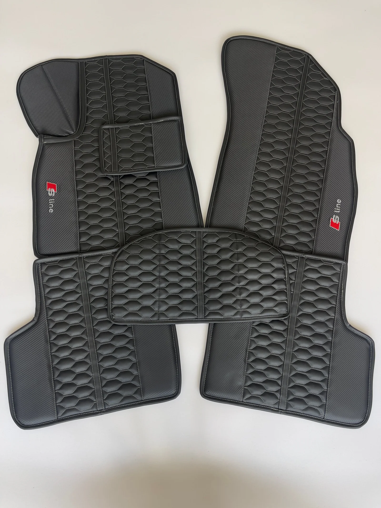
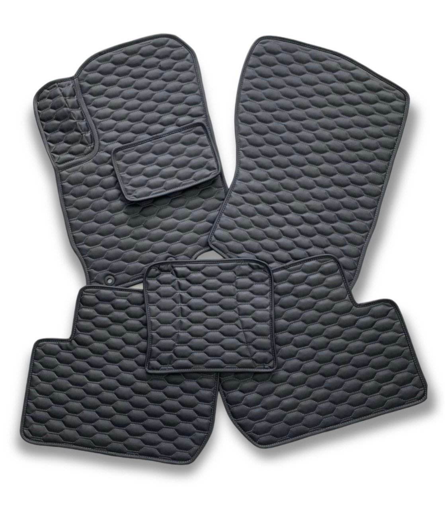
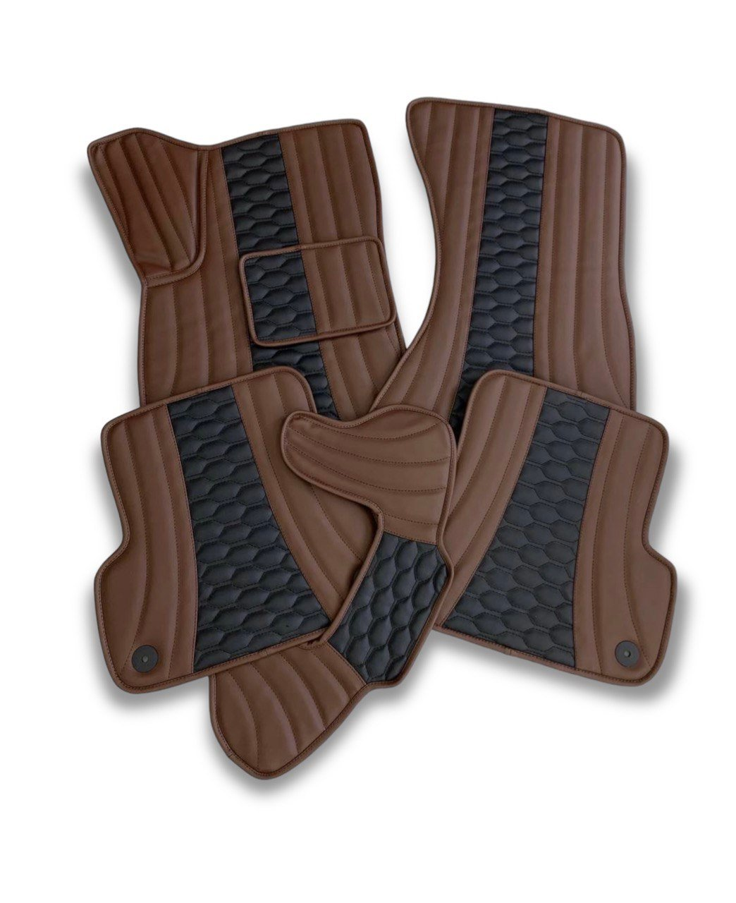
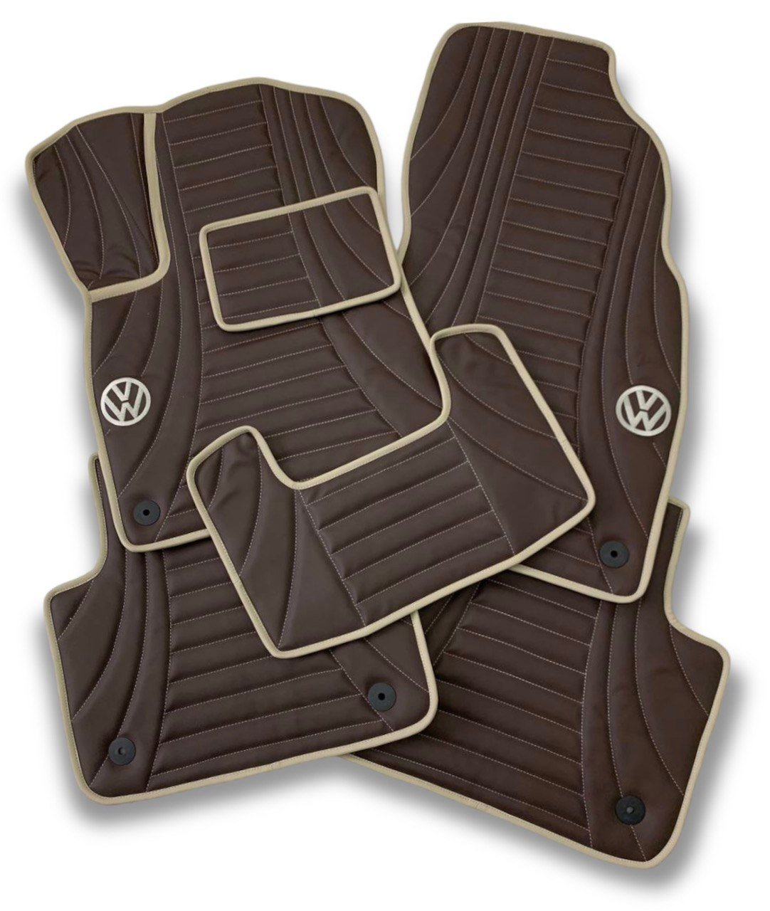
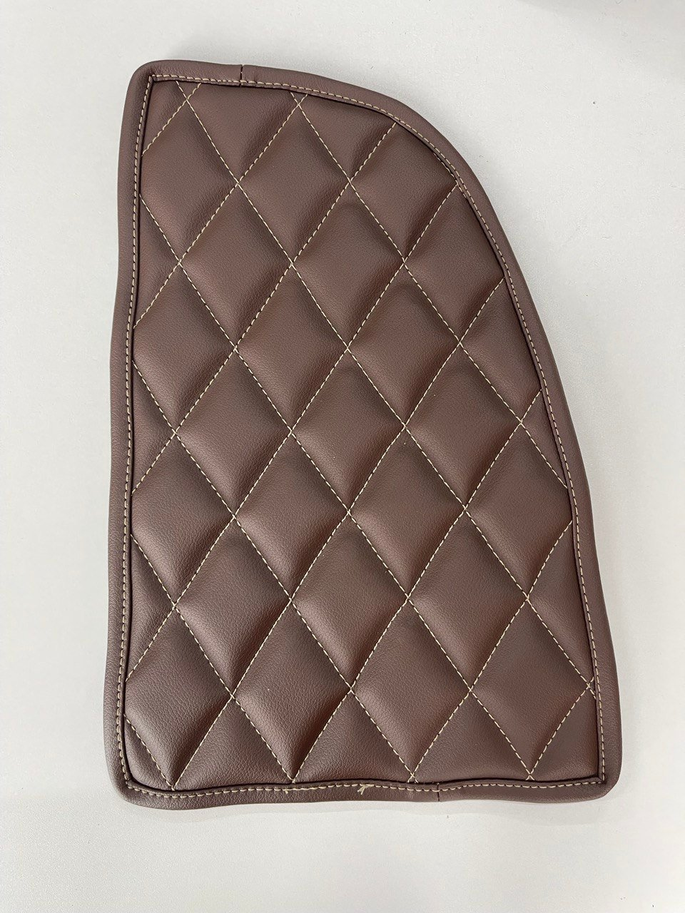
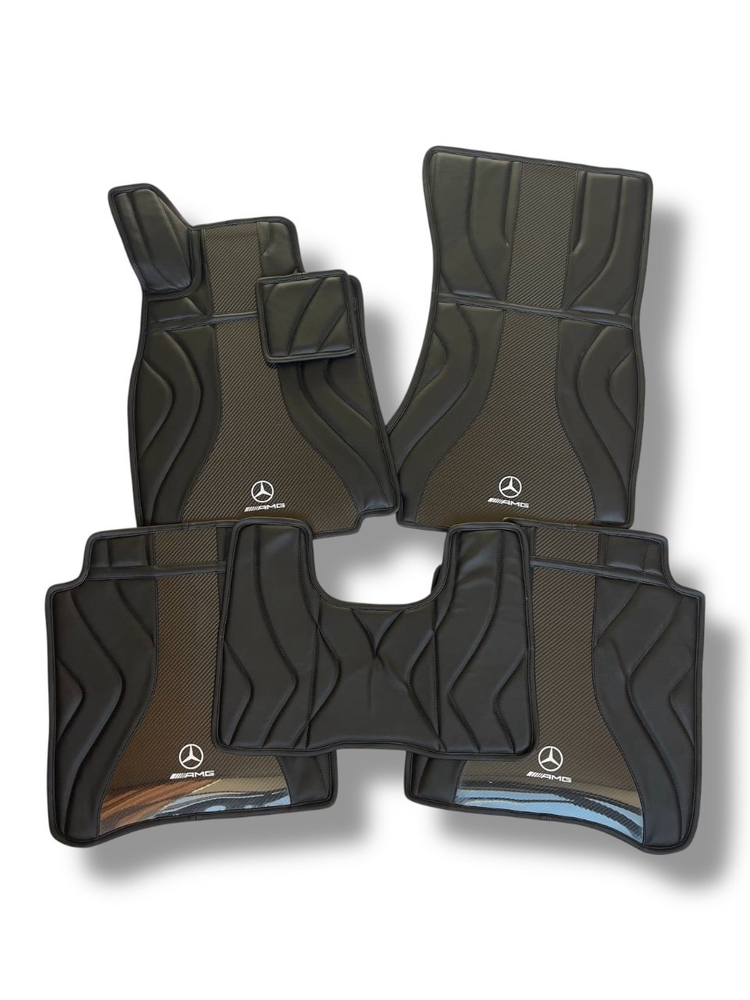
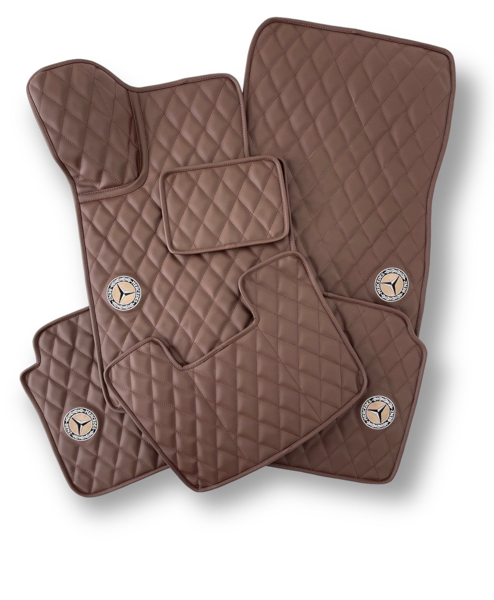
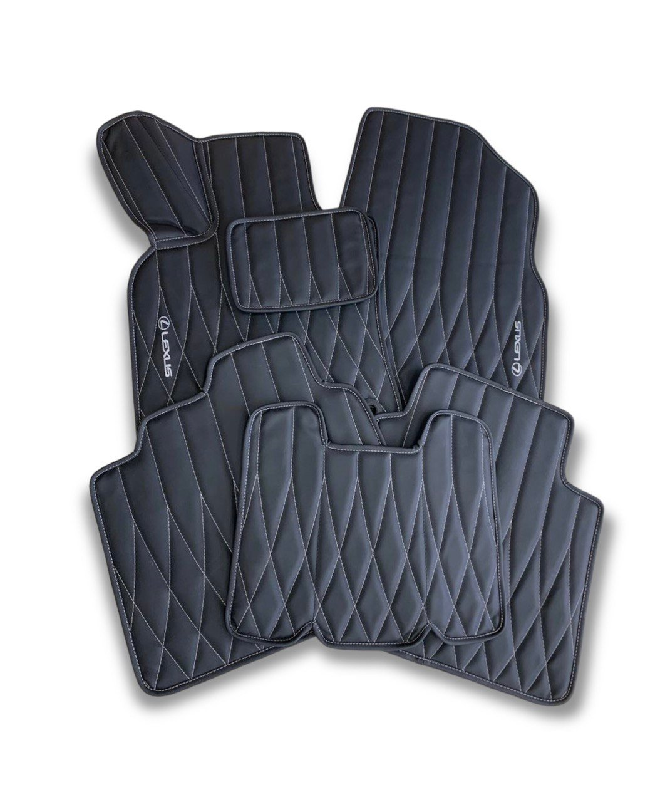
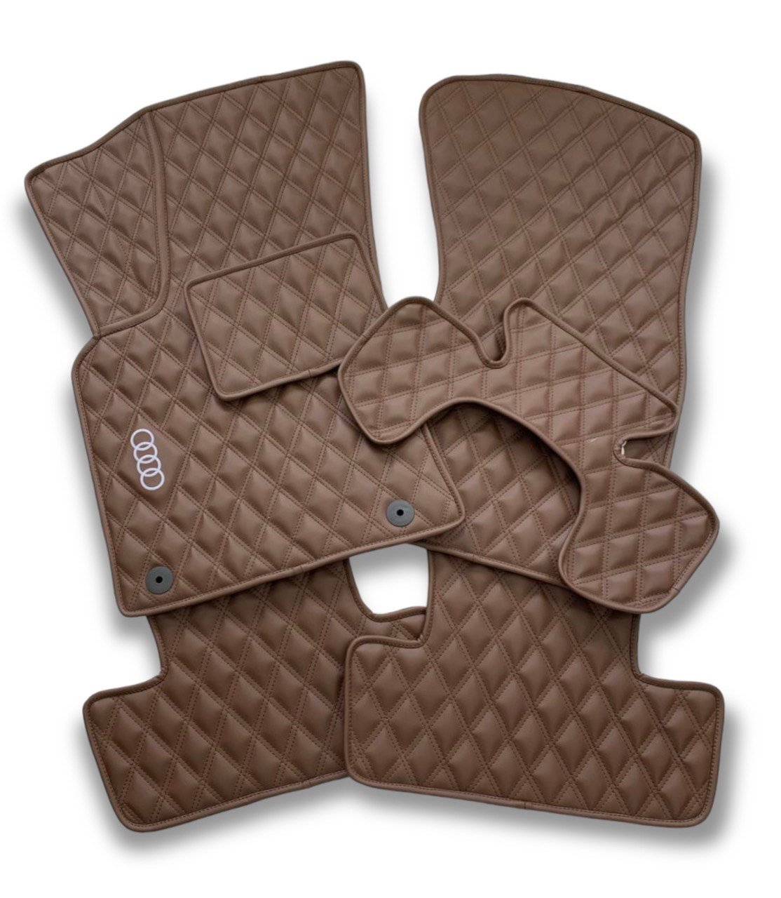
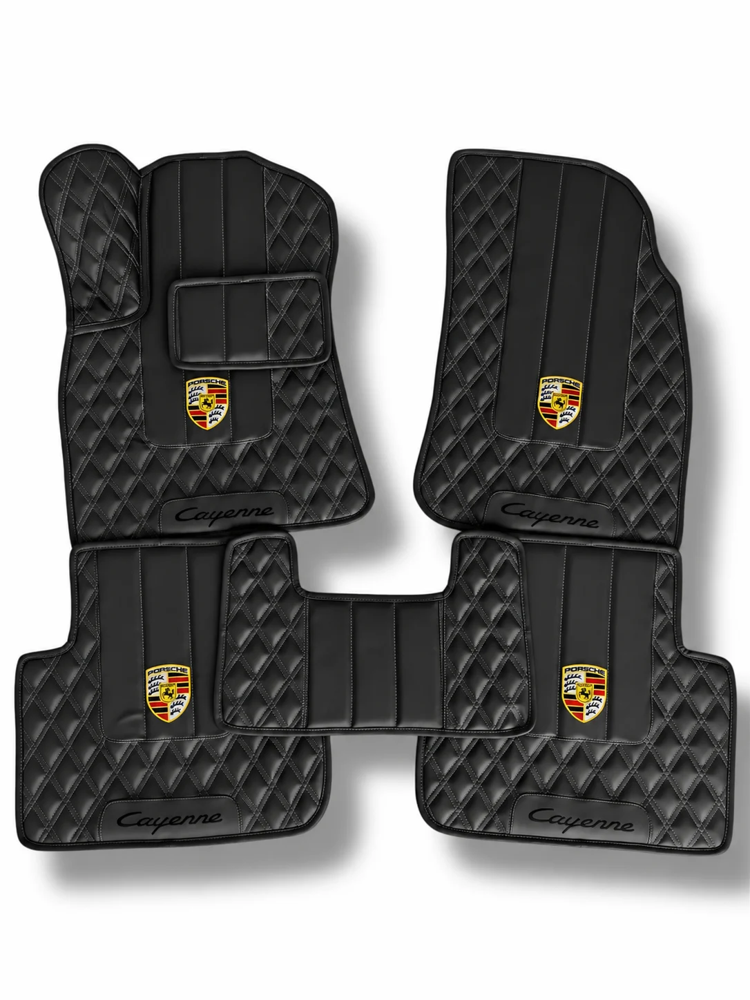

Виготовляємо під марку, модель і рік
Пасують салону.Захищають щодня.
Називаєш марку, модель і рік — ми перевіряємо лекала та шиємо комплект точно по контуру. Він не зсувається й закриває ковролін від вологи та бруду.
5000+готових лекал
7 роківручного досвіду
3 рокигарантії
Signature setMade in Ternopil

Екошкіра · точні лекалавід 5 200 грн
✓Штатні
кріплення
кріплення
✓Твій колір
і строчка
і строчка
Точна посадка◆Не пропускають вологу◆Легкий догляд◆Ручне виготовлення◆Персональний дизайн◆Точна посадка◆Не пропускають вологу◆Легкий догляд◆
Без універсальних рішень
Називаєш авто.
Ми перевіряємо лекала.
Ти отримуєш точну посадку.
Перед пошиттям уточнюємо марку, модель, рік і комплектацію. Тому килимки збігаються з формою підлоги, стають на штатні кріплення й не потребують підрізання.

Матеріал зблизькаЩільна екошкіра й акуратна строчка
заводського ковроліну може закривати 3D-комплект, включно з боковими зонами.

ПерсоналізаціяЛоготип, ініціали або власний знак
Лягають по контуру й залишаються на місці.
Точний крій і штатні точки фіксації не дають килимкам їздити під ногами. Високі зони закриття допомагають зберегти ковролін чистим.
- Лекала під модель і рік
- Вологостійка прогумована основа
- Догляд за кілька хвилин
Готові комплекти
Спочатку подивись,
як це виглядає наживо.
Це реальні замовлення Pro Mats — без стокових фото. Так видно фактуру, посадку та поєднання кольорів до вибору власного комплекту.
Більше робіт в Instagram ↗


Обери вигляд
Обери малюнок.
Ми підженемо решту.
Колір основи, нитку й персоналізацію підберемо окремо — під салон і бюджет.
4 варіанти нижче ↓01

02

03

Акцентний дизайн
Ексклюзив
Складніший малюнок для тих, хто хоче помітну деталь у салоні.
7 920 грнОбрати ↗
04
Технологічна колекція
Натуральний карбон
Справжній композит і ручне виконання для максимально технологічного вигляду.
від 16 800 грнОбрати ↗
Ціна вказана за комплект
Фінальна вартість залежить від формату, автомобіля та персоналізації.
Конфігуратор кольору
Збери поєднання.
Одразу побач результат.
Натискай на кольори основи й нитки — зображення зміниться одразу. Обрану комбінацію передамо менеджеру разом із заявкою.
Live preview16 комбінацій

Чорний · нитка: світло-сірий
Твоя конфігураціяоснова + нитка
Колір основиЧорний
Колір ниткиСвітло-сірий
Стартова вартістьвід 5 200 грн
Точну суму менеджер назве після вибору формату та моделі авто.
3Dмаксимальне
закриття салону
закриття салону
Не лише передній ряд
Один стиль.
Весь автомобіль.
Зберемо комплект під твою задачу: лаконічні 2D, захисні 3D, килимок у багажник або органайзер — в одному матеріалі й кольоровій системі.
2D
Точний крій, штатні кріплення, чистий мінімалістичний вигляд.
3D
Закриває бокові зони й до 95% заводського ковроліну.
Багажник
Продовжує дизайн салону та спрощує щоденний догляд.
Органайзер
Акуратне зберігання в потрібному розмірі й оздобленні.
Персоналізація
Додай деталь,
яка буде тільки твоєю.
Можемо додати логотип марки, ініціали або власний знак. Підберемо розмір і колір так, щоб персоналізація виглядала частиною комплекту.
- 01Металевий шильдАкуратний акцент із металевим блиском
- 02ВишивкаКолір і масштаб під загальний дизайн
- 03Власний знакІніціали, символ або готовий ескіз
in Ternopil
Як відбувається замовлення
Від заявки
до готового комплекту.
- 01
Ти називаєш авто
Потрібні марка, модель, рік і, за потреби, уточнення комплектації.
- 02
Разом обираємо дизайн
Погоджуємо формат, колір основи, нитку та персональні деталі.
- 03
Ми шиємо комплект
Працюємо за лекалами саме твоєї моделі та перевіряємо готовий виріб.
- 04
Відправляємо по Україні
Ти отримуєш комплект і прості рекомендації з догляду.
Без дрібного шрифту
Питання,
які варто поставити.
Якщо твого питання немає — менеджер перевірить лекала та конфігурацію саме для твого авто.
+38 (067) 11-77-387Чи є лекала саме для мого авто?
Наявність лекал перевіряємо за маркою, моделлю та роком випуску. Якщо потрібна додаткова інформація про комплектацію, менеджер уточнить її до запуску замовлення.
Килимки не протруться від взуття?
Матеріал розрахований на щоденне навантаження. Термін служби залежить від режиму експлуатації та догляду; на якість комплекту діє 3-річна гарантія.
Як доглядати за килимками?
Легкі забруднення достатньо протерти вологою мікрофіброю. Сильні можна змити мийкою високого тиску у підвішеному стані, а потім витерти.
Який термін виготовлення?
Термін залежить від завантаження виробництва та обраної конфігурації. Актуальну дату менеджер повідомить під час узгодження.
Навіщо потрібна передоплата?
Кожен комплект створюється індивідуально під авто, колір і персоналізацію. Передоплата підтверджує запуск замовлення у виробництво.
Перевіримо лекала й порахуємо вартість
Розкажи, яке в тебе авто.
Решту підберемо разом.
Залиш марку, модель, рік і номер телефону. Менеджер перевірить лекала, пояснить різницю між форматами та запропонує кілька доречних поєднань.
Що буде далі
- Перевіримо лекала
- Підберемо формат і дизайн
- Порахуємо точну вартість
+38 (067) 11-77-387Пн–Пт 9:00–19:00 · Сб–Нд 10:00–17:00